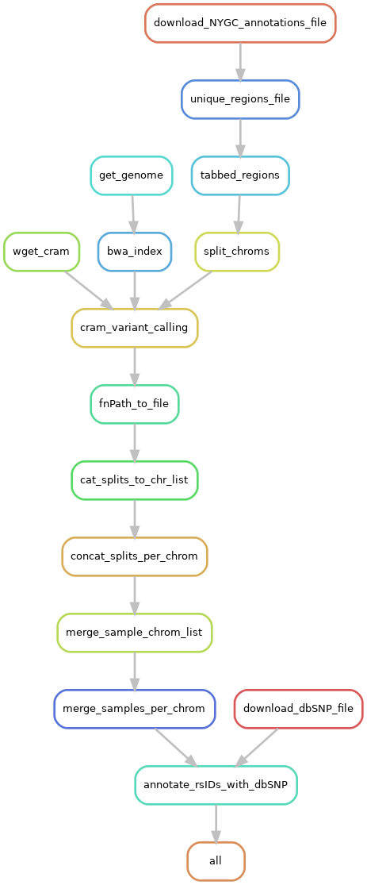

Iliad Stored Sequence
This How-To Guide introduces the stored sequence read data processing module of the Iliad workflow developed using Snakemake workflow language.
Please visit Snakemake for specific details. In general, though, each module is composed of rules. These rules define how output files are generated from input files while
automatically determining dependencies amongst the rules. A DAG (directed acyclic graph) of jobs will be built each time to account for all of the samples and jobs
that will executed either via job scheduler or local cores and will execute in parallel if multiple jobs are declared.
Because of the Snakemake workflow system design, the Iliad workflow is scalable from single core machines to HPC clusters with job schedulers.
The Stored Sequence Module is designed to process CRAM files, which are heavily compressed sequence alignment files. This module reflects that of the raw sequence module, but is useful in beginning the workflow at the CRAM file retrieval step. Many open-source data repositories host CRAM data because it is necessary to be storage conscientious with genomic data.
Currently, it is most common to prepare Reference Data Panels from open-source Whole-Genome Sequence (WGS) data such as 1000 Genomes Project data. Reference data is paramount in preparation of target data samples, especially in human research studies where biogeographical ancestry is either the variable of interest or covariate in GWAS for instance. Depending on the level of data sharing, some research labs are unable to submit their target data to commercial Imputation services and will need to build their own Reference Data Panel as well as depend on open-source Imputation tools. We highly recommend Odyssey: a semi-automated pipeline for phasing, imputation, and analysis of genome-wide genetic data.
As sequence data gradually overtakes microarray data as the primary Target Data source, though, it is going to be mission critical to derive research related genotypic information quickly and efficiently from stored sequence data in the CRAM form, too. We ensured no bioinformatics knowledge is needed to run this module with the help of external test runs performed on Google Cloud Platform (GCP).
Stored Sequence Module Rule Graph
{kind=link}
Background
Sequencing data is becoming more accessible for researchers. It’s primary role for years in GWAS was to serve as reference data to fill in the gaps of target datasets containing large sample sizes through phasing and imputation techniques. This will still be a very important role over time because microarray data is still commonly used and more sequence data means bigger and better reference sets for this purpose. Sequence data’s current role, though, is already in transition for its use as target data. The automation of the numerous steps to prepare data from a sequencer’s stored output is crucial, so we developed Iliad with users of all levels in mind to obtain variant call files with clean and reliable genotypes. It does possess the capability to be adapted and have add-ons. Pull requests and contributions are welcomed.
Basics
The stored files from after sequence alignment are CRAM files found in .cram format and they have a corresponding index file .cram.crai.
As the user, you have the choice to upload an Excel sheet or CSV file with no header and the following two fields:
Sample Unique sample identifier
URL stored sequence data download FTP link
If you already have the sequence files and are not downloading open-source data, you have the option to place your data into the Iliad/data/cram/ directory.
You will still need to provide a separate samples.tsv file in both situations where the TSV file has a header line with only one field named cramSample.
sample HEADER
SAMPLE1 sample identifier
SAMPLE2 sample identifier
These CRAM files are already aligned, but a reference genome will be needed to perform variant calling still. It is important that you use the same reference genome in the following steps, as was originally used in the alignment of your data! Since Iliad was tested with CRAM data aligned to GRCh38 reference assembly, Iliad` is configured to download Homo sapiens GRCh38 release 104 as default.
BCFtools is used to perform mpileup and call to perform variant calling on New York Genome Center (NYGC) annotated sites. Iliad downloads and uses the NYGC’s annotated SNP regions file per chromosomes (link to chr22 file) - recalibrated_variants.annotated.txt. A README file can be found concerning the annotations protocol. These chromosome annotations files consume roughly 70 GB of storage, so we process the files into a simple regions file with two fields and no header: CHROM POS. This reduces the file footprint to a little over 1 GB. The limitation of this file is Homo sapiens GRCh38 reference assembly. There are 124,954,769 variants to be called across chromosomes 1-22 and X.
This is a resource intensive task to be performed on many samples and so we reduce the serial runtime by splitting each chromosome regions file into even splits
that can be processed in parallel with job scheduling and management controlled by Snakemake. We can then concatenate the splits per chromosome per sample to obtain 23
chromosome VCFs for each sample. Samples are merged at each chromosome and the ID field in the VCF is annotated using BCFtools and dbSNP annotations vcf so that
each position is given a standardized rs ID. The default configuration file is set to download human_9606_b151_GRCh38p7 All_20180418.vcf.gz.
Setup
Once the Installation of Iliad and its two dependencies has been completed,
you will find your new working directory within the PATH/TO/Iliad folder.
Make sure your current working directory is in this cloned repo as stated in the installation.
If the repository is not cloned in that fashion, there is a chance that your direcory will be improperly named as Iliad-main.
$ cd Iliad
In that working directory you will find there are a number of directories with files and code to run each of the module pipelines.
FIRST,
there is a configuration file with some default parameters, however, you MUST at least change the workdirPath parameter to the appropriate
path leading up to and including /Iliad e.g. /Path/To/Iliad/. The configuration file is found in config/config.yaml.
workdirPath: /Path/To/Iliad/
Some other parameters that are pre-set and you might consider changing to your project needs include:
Homo sapiens GRCh38 release 104 reference genome
ref:
species: homo_sapiens
release: 104
build: GRCh38
URL and path to FTP site housing the data for retrieval. Here is an example from
cramUrl:
# ftp host
host: ftp://ftp.site.host.example
# ftp path
path: /path/to/data/files/
# number of directories that the desired file is in at ftp site
cutdirs: 5
SECOND,
there is a data/cram directory with a readme.md file. You must place all of your .cram and .cram.crai files in this folder IF you have the files already.
Otherwise, as mentioned above, Iliad features a downloading step, particularly from FTP sites where open-source genomic data is hosted.
You will need to provide a table of either Excel or CSV format as seen below. There is no header line so simply replace Sample with your unique identifier for your sample and
URL for the specific URL path to the FTP site that hosts the data.
Sample |
URL |
You’ll notice in provided templates, there are two rows of the same sample. Looking closely, you will find that the duplicated sample names have a different URL referencing the index .cram.crai file.
THIRD,
each module pipeline has a specific Snakefile.
Snakemake will automatically detect the main snakefile, which is named excatly as such and found in the workflow directory: workflow/Snakefile.
Iliad reserves the main snakefile for the main module.
This means the user must specify which Snakefile will be invoked and the stored sequence module is called with the following:
$ snakemake --snakefile workflow/cram_Snakefile
and combined with other user-specified snakemake flags, of course, like --cores.
If you plan to use on a local machine or self-built server without a job scheduler the default command to run is the following:
$ snakemake -p --use-singularity --use-conda --cores 1 --jobs 1 --snakefile workflow/cram_Snakefile --default-resource=mem_mb=10000 --latency-wait 120
However, there is a file included in the Iliad directory named - cram-snakemake.sh that will be useful in batch job submission.
Below is an example snakemake workflow submission in SLURM job scheduler.
Please read the shell variables at the top of the script and customize to your own paths and resource needs.
$ sbatch cram-snakemake.sh